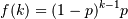

numpy.random.geometric¶
- numpy.random.geometric(p, size=None)¶
Draw samples from the geometric distribution.
Bernoulli trials are experiments with one of two outcomes: success or failure (an example of such an experiment is flipping a coin). The geometric distribution models the number of trials that must be run in order to achieve success. It is therefore supported on the positive integers, k = 1, 2, ....
The probability mass function of the geometric distribution is

where p is the probability of success of an individual trial.
Parameters : p : float
The probability of success of an individual trial.
size : tuple of ints
Number of values to draw from the distribution. The output is shaped according to size.
Returns : out : ndarray
Samples from the geometric distribution, shaped according to size.
Examples
Draw ten thousand values from the geometric distribution, with the probability of an individual success equal to 0.35:
>>> z = np.random.geometric(p=0.35, size=10000)
How many trials succeeded after a single run?
>>> (z == 1).sum() / 10000. 0.34889999999999999 #random